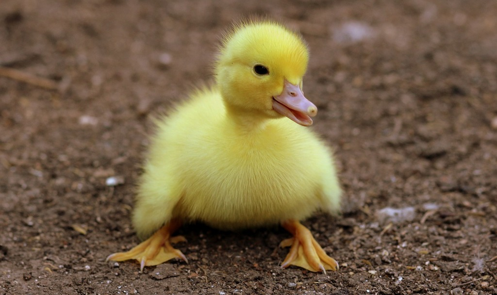

Discord Bot
My discord bot, Duck_Master, if you want to see it in action, join my discord!
My discord bot, Duck_Master, if you want to see it in action, join my discord!

Click here To Read More
An internet archive bot!
I made a small python script to search and download files from the Internet Archive
I made a small python script to search and download files from the Internet Archive